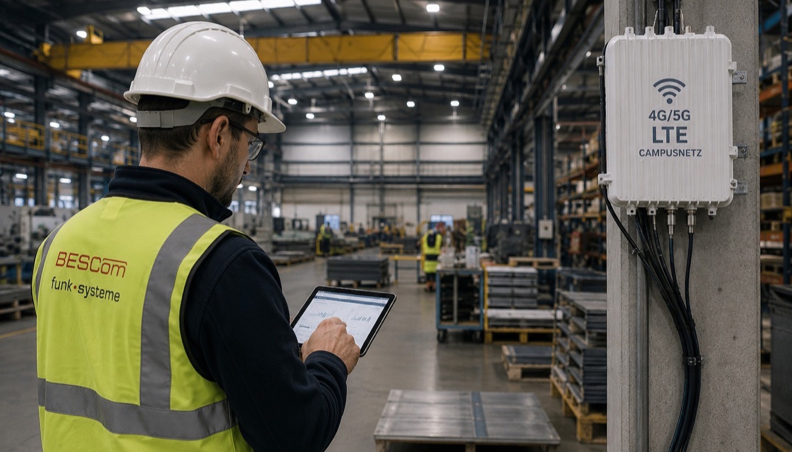

Wer jemals versucht hat, auf einem Werksgelände, in einer Tiefkühllager-Halle oder im Hafenbereich mit dem Smartphone zu telefonieren, kennt das Problem: kein Empfang, schlechte Qualität, instabile Verbindung. Für private Kommunikation ist das ein Ärgernis. Für Industriebetriebe, die auf Echtzeit-Datenkommunikation zwischen Maschinen, Gabelstaplern und Leitsystemen angewiesen sind, ist es ein echtes Problem.
Die Lösung: ein privates LTE-Campusnetz – eine dedizierte, vollständig unabhängige Mobilfunkinfrastruktur auf dem eigenen Betriebsgelände.

Was ist ein privates LTE-Campusnetz?
Ein LTE-Campusnetz (auch „Private LTE" oder „Campus-LTE" genannt) ist ein lokales Mobilfunknetz, das ausschließlich auf dem Betriebsgelände des Betreibers funktioniert und vollständig unter seiner Kontrolle steht. Es basiert auf demselben Standard wie öffentliches 4G/LTE – aber nutzt dedizierte Frequenzen, die von der Bundesnetzagentur (BNetzA) für lokale Campus-Nutzung vergeben werden.
Seit 2019 vergibt die BNetzA in Deutschland Frequenzen im 3,7-GHz-Band (3700–3800 MHz) speziell für private Campusnetze. Das ermöglicht Industrie und Hafen den Aufbau vollständig autonomer, leistungsfähiger Mobilfunknetze.
Die 6 entscheidenden Vorteile gegenüber öffentlichem Mobilfunk
1. Vollständige Flächendeckung auf dem Betriebsgelände
Öffentliche Mobilfunknetze sind für die Flächenversorgung der Bevölkerung ausgelegt – nicht für die spezifischen Anforderungen einer Industriehalle. Signalschatten, Metallstrukturen, tiefe Lagerbereiche oder abgelegene Außenbereiche werden vom öffentlichen Netz häufig nicht zuverlässig versorgt. Ein Campusnetz wird gezielt für Ihr Gelände ausgelegt – jeder Bereich ist abgedeckt.
2. Datensicherheit und volle Datenkontrolle
Im öffentlichen Mobilfunknetz laufen Ihre Daten über fremde Infrastruktur. Im Campusnetz bleiben alle Daten im eigenen Netz – der Core ist lokal oder in Ihrer privaten Cloud. Das ist für sicherheitskritische Anwendungen, Maschinendaten oder sensible Produktionsdaten ein entscheidender Vorteil.
3. Garantierte Bandbreite und Latenz
Im öffentlichen Netz teilen Sie die Kapazität mit allen anderen Nutzern. In der Mittagspause, bei Veranstaltungen oder in dicht besiedelten Gebieten bricht die Qualität ein. Im Campusnetz steht die volle Bandbreite exklusiv Ihnen zur Verfügung – mit stabilen Latenzen unter 10 ms, die für Echtzeit-Maschinensteuerung ausreichen.
4. IoT und Maschinenvernetzung
LTE-Campusnetze ermöglichen die gleichzeitige Anbindung von Tausenden Geräten: Gabelstapler, AGVs (autonome Fahrzeuge), Sensoren, Kameras, Handscanner, Tablets. Das ist die technische Grundlage für Industrie-4.0-Anwendungen.
5. Prioritätssteuerung für kritische Anwendungen
Im eigenen Netz können Sie Prioritäten setzen: Notfallkommunikation, Maschinensteuerung oder Überwachungskameras erhalten höhere Priorität als normale Sprach- oder Datenkommunikation – QoS (Quality of Service) auf Netzwerkebene.
6. Langfristige Kostenstabilität
Kein monatlicher SIM-Beitrag pro Gerät, keine Abhängigkeit von Mobilfunkanbietern, keine unvorhersehbaren Preiserhöhungen. Nach der Investition in die Infrastruktur sind die laufenden Kosten auf Wartung und Frequenzgebühren beschränkt.
Typische Anwendungsbeispiele in Hamburg und Norddeutschland
| Branche | Anwendung |
|---|---|
| Hafenlogistik | Kran-Steuerung, Container-Tracking, Fahrzeugkommunikation auf weitläufigen Arealen |
| Automobilindustrie | AGV-Steuerung, Maschinendaten-Telemetrie, Qualitätskontrolle mit Hochauflösungs-Video |
| Energieversorgung | Fernüberwachung von Anlagen, Smart-Metering, Schaltfeld-Kommunikation |
| Chemie / Pharma | Sichere Datenkommunikation, Prozessüberwachung, Compliance-gerechte Datenlokalität |
| Entsorgung / Recycling | Fahrzeugdisposition auf dem Werksgelände, Wiegesystem-Integration |
| Großhandel / Lager | Handscanner, Pickroboter, Lagervisualisierung in Echtzeit |
Frequenzgenehmigung: Was brauchen Sie?
Die Bundesnetzagentur hat die Vergabe von Campusnetz-Frequenzen im 3,7-GHz-Band stark vereinfacht. Das Verfahren:
- Beantragung bei der BNetzA – mit technischer Beschreibung und Standortplan
- Prüfung auf Interferenzen – mit benachbarten Netzen und Schutzabständen
- Zuteilung der Frequenz – in der Regel für 10 Jahre, verlängerbar
- Aufbau und Inbetriebnahme des Campusnetzes
BESCom übernimmt die vollständige Antragstellung – von der technischen Planung bis zur Einreichung. Typische Bearbeitungszeit bei vollständigen Unterlagen: 6 bis 14 Wochen.
Was kostet ein LTE-Campusnetz?
Eine pauschale Antwort gibt es hier nicht – und das ist keine Ausrede, sondern die Realität dieser Technologie. Die Investition hängt von Faktoren ab, die sich erst im Gespräch erschließen: Geländegröße, Topografie, Anzahl der Basisstationen, gewünschte Redundanz, Core-Lösung (lokal oder cloud-basiert) und die konkreten Anwendungen, die das Netz tragen soll.
| Projektszenario | Maßgebliche Kostenfaktoren |
|---|---|
| Kleines Gelände (1–2 ha), einfache Anwendungen | Anzahl Basisstationen, Antennentyp, lokaler Core |
| Mittelgroßes Werksgelände (5–20 ha) | Abdeckungsplanung, Gerätedichte, Redundanzanforderung |
| Großes Hafenareal oder Multi-Site | Multi-Layer-Architektur, SLA-Anforderungen, Integration in Bestandssysteme |
Was zählt, ist nicht der Preis allein – sondern das Verhältnis von Investition zu Nutzen. Wer mit einem privaten LTE-Netz SIM-Kosten einspart, Produktionsausfälle durch zuverlässige Kommunikation reduziert und Industrie-4.0-Prozesse erst ermöglicht, rechnet oft einen ROI von 3 bis 6 Jahren. BESCom erstellt Ihnen kostenlos eine Bedarfsanalyse – damit Sie genau wissen, was Ihr Projekt braucht und was es wert ist.
💡 Unser Ansatz: Jedes Campusnetz ist ein Einzelprojekt. Wir analysieren Ihre Anforderungen, bewerten die technischen Optionen und zeigen Ihnen transparent, welche Lösung das beste Preis-Leistungs-Verhältnis für Ihren konkreten Betrieb bietet – ohne Standardpakete, ohne versteckte Folgekosten.
→ Jetzt kostenlose Bedarfsanalyse anfragen
Fazit: Eigenständigkeit zahlt sich aus
Wer auf öffentlichen Mobilfunk wartet, wartet lange – und verlässt sich auf eine Infrastruktur, die nicht für industrielle Anforderungen gebaut wurde. Ein privates LTE-Campusnetz gibt Industriebetrieben die volle Kontrolle: über Abdeckung, Daten, Prioritäten und Kosten.
BESCom plant, genehmigt und installiert LTE-Campusnetze in Hamburg und Norddeutschland – von der ersten Frequenzanalyse bis zur betriebsbereiten Anlage.
Wir prüfen die Machbarkeit und erstellen ein kostenloses Konzept für Ihre Anforderungen.